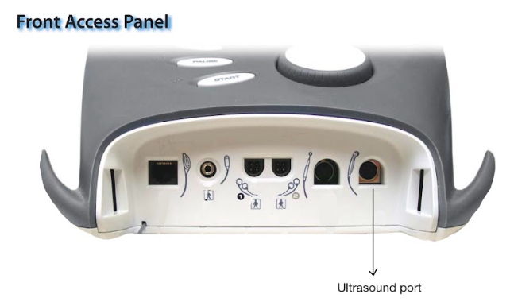

How to connect and calibrate the device to deliver simultaneous ultrasound and premodulated electrical stimulation.
- Obtain one adhesive electrode pad and a bottle of ultrasound gel.
- Ensure ultrasound transducer wand is available.
This procedure combines ultrasound waves with electrical stimulation through a single circuit. You will perform this task to treat irritable trigger points, scar tissue, or muscle spasms.
-
Connect the ultrasound transducer.
Plug the ultrasound transducer wand into the dedicated ultrasound port. Place one electrode on the athlete's skin adjacent to the treatment area to complete the electrical circuit.

-
Place the electrode on the athlete's skin.
Place the electrode on the skin adjacent to the treatment area and connect the Black Lead Wire from Channel 2 to the electrode to complete the circuit.
-
On the display home menu, select
Combo
.
-
Select
Treatment Time
and use console arrow keys to achieve the desired time.
-
Press
to finalize time.
-
Apply ultrasound gel.
Apply a liberal layer of ultrasound gel to the treatment area and place the ultrasound wand on the treatment area.
Note:
Ultrasound head
MUST
maintain contact with skin to prevent damage to the head. Keep the soundhead flat against the skin for the remaining steps.
-
Set the ultrasound frequency.
Slowly rotate the main intensity dial clockwise to
1.2 W/cm2
.
-
Select
Edit Stim
.
Slowly rotate the main intensity dial clockwise. You will look for muscle twitching in the treatment area.
-
Once the muscle is twitching, press
START
.
Keep the soundhead moving constantly in smooth, small circles
.
The ultrasound timer and e-stim channel will run simultaneously on the console.